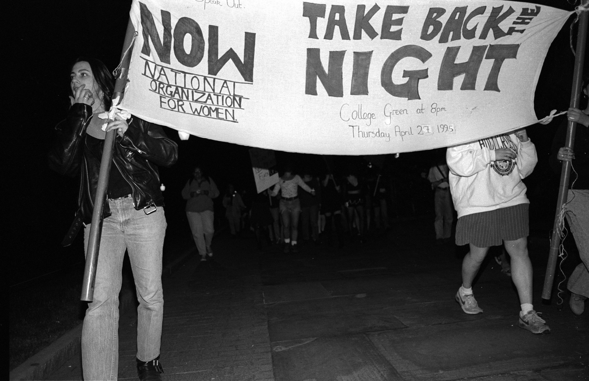

In the early months of 1973, Penn was buzzing with talk of a string of rapes on campus.
Campus buildings were open to the public “24/7 practically,” Carol Tracy, an undergraduate at the time, said. Students, particularly women, did not feel safe on campus — even in their residences — after five women were raped in a span of three days.
After a confrontational meeting with Penn’s public safety director, a group of women organized a sit-in at then-President Martin Meyerson’s office in College Hall to demand increased security on campus and a center to coordinate it.
After four days, the University agreed to the women’s demands. The result, the Penn Women’s Center, currently sits at 3643 Locust Walk.
In the years after its founding, the Penn Women’s Center was a nexus for community activism, where women from all over the University came together to advocate for women’s rights.
Today, as criticism of how universities handle sexual assault spreads across the country, Penn has remained largely untouched. But over the years, the Women’s Center, and Penn as a whole, has found itself at the center of several controversial cases of sexual assault. The controversies have played out in community protests, policy changes and lawsuits that impacted the way the University addresses sexual violence today.
Public safety and community outrage
After the rapes in 1973, a group of women, including the founder of Women Organized Against Rape — a Philadelphia-based anti-violence organization founded in 1971 — met with Penn’s director of public safety.
In the meeting, the director of public safety advised the women not to “wear provocative clothing,” Tracy said in an interview for this article.
“There was this undergraduate who was just a freshman — only 16 years old — and she stood up and said to the director of public safety, ‘I can walk buck naked down this campus and your job is to protect me,’” said Tracy, who became the director of the Women’s Center in 1977, after she graduated. “That sort of switched the audience from being fearful and self-blaming to being very angry.”
The sit-in that led to the Women’s Center establishment was emblematic of its brand of activism: grassroots, community-led engagement. And, having been the result of a high-profile negotiation, Tracy said, the Women’s Center was in a unique position in that its voice was extremely prominent, nearly always grabbing the attention of Penn’s highest administrators.
Elena DiLapi, who was the director of the Women’s Center from 1985 to 2007, said she had the ear of the president. As the University has grown over the years, the president’s public role in everyday campus affairs has diminished, and campus resource centers have to go through more bureaucracy before they can connect with upper-level administrators.
“When I was hired, I had a dotted line to the president and the provost, so no administrative hierarchy would ever get in my way — the director’s way — of doing advocacy for women,” she said.
Alleged gang rape: ‘The single most awful event’
A decade after the Women Center’s founding, a gang rape at a fraternity brought sexual violence among students to the forefront of campus dialogue.
In February of 1983, a female student went to a party at the fraternity Alpha Tau Omega on 39th and Locust, where she was reportedly drinking and taking drugs.
The night ended, the student claimed, with five or six men carrying her upstairs and raping her, according to Daily Pennsylvanian reports. The student came to the Women’s Center days after the alleged assault, and the incident became public two weeks later, running as the lead story in more than 50 issues of The Daily Pennsylvanian over the next year.
At the time, Tracy, then the Women’s Center director, called it “the single most awful event ever reported to me in 15 years at Penn.”
The case set off a firestorm on campus. The day after the news broke, 500 students attended a rally against sexual violence. Less than a month later, the University withdrew its recognition of the fraternity, setting the stage for a protracted legal battle between the fraternity and Penn over the way the investigation had been conducted. The case led Penn to conduct a second investigation in December of 1983.
The University received heavy criticism from many sides of the case. The fraternity claimed the investigation ignored relevant facts and said the judicial board bowed to public pressure. Advocates for the alleged victim said the University didn’t take the incident seriously enough. A faculty report blasted Penn for not according the alleged victim “the dignity and compassion she deserved.”
The incident prompted an impassioned discussion on sexual assault and cultural norms. Some students denied that what had occurred was rape — claiming instead that the alleged victim merely exercised poor judgment due to intoxication.
“The young lady went out and got herself in trouble,” an ATO member told the DP when the story broke. “She was not in the most sober and upright state, she was loose and wild, imbibing many things and she was flaunting herself.”
The case concluded nearly a year after the incident occurred, when a second investigation, led by a law school professor, suspended the fraternity for the remainder of the school year. Many — including then-President Sheldon Hackney — saw the punishment as weak.
“I’m a little disappointed that the sanctions are not as stringent as I would have liked,” Hackney told the DP the time.
The incident brought on more than a decade of animosity between fraternities and women’s activists, and pushed the issue of student-on-student sexual violence to the fore of campus conversation, where previously activism had been focused on rapes of students by assailants unknown to the victims.
Crime statistics reporting comes under fire
In 1997, the University was again criticized for allegedly mishandling sexual violence. A lawsuit filed by a former student claimed that when the student was raped, Penn covered up the incident.
The lawsuit said the student was raped in November 1994 in High Rise South — what is now called Harrison College House. Penn Police, the lawsuit alleged, did not provide proper support to the victim when responding to the crime. The suit also claimed that the University failed to include the rape in the crime statistics it is required by law to provide to the state and federal government each year. The case was eventually settled out of court, and the terms of settlement were not made public.
The early 1990s saw a rising concern over safety on college campuses, epitomized in the passage of the Crime Awareness and Campus Security Act of 1990. The law mandated that colleges receiving federal funding produce an annual report with campus crime statistics and security information.
The reports are the primary source of information about sex crimes on college campuses, though they generally vastly underestimate the prevalence of sexual assault.
The 1997 allegations are similar to those that have been brought against other colleges — including the University of North Carolina and Swarthmore College — in the past year. Students at those institutions have claimed the colleges have tried to cover up the prevalence of sexual assault on their campuses.
In 1994, the University reported that no forcible sex offenses occurred on campus. A DP article from that year reported that Penn Police were investigating a sex crime on the day the student who sued the University said she was assaulted.
The lawsuit came amidst an unrelated federal Department of Education investigation into Penn’s crime reporting practices, prompted by a series of articles in the Philadelphia Inquirer claiming Penn reported statistics based on an overly narrow definition of “on-campus.”
The federal investigation ultimately concluded that the University had not violated the law in its definition of campus boundaries. But it did note several smaller violations, including failure to include a rape in the statistics it sent to the state and federal governments in 1994.

Violence prevention, from administrators and peers
In its efforts to prevent sexual violence today, the University taps into the student activism that was the catalyst for much of the ire over the past 40 years.
Over the past decade, organized student groups, run out of the Women’s Center, have taken a large role in sexual violence prevention on campus — a strategy that administrators have fostered.
“Peer [students] are always in a more impactful position, frankly, which is why a lot of our resources have gone into communicating with those student groups who are eager to communicate those messages, because they can be particularly effective,” Provost Vincent Price said. “They can communicate informally and in ways an institution would find challenging.”
Students leaders cited collaboration between student groups and administrators as a strength of Penn’s approach to addressing sexual violence.
“Nothing is coming strictly from one place or the other,” College junior and Abuse and Sexual Assault Prevention Chair Joanna Kamhi said. “It’s not like we’re not involved with the administration’s approach and they’re not involved with our approach. We’re talking all the time. So everything is really a collaborative effort.”
Felicity Paxton, the current director of the Women’s Center, called the student groups “committed and compassionate in their work on these issues” in a statement to the DP.
On an administrative level, the University emphasizes the importance of having a network of resources to support victims of sexual violence.
“The issue of sexual violence on college campuses is a matter of national concern and one that Penn takes extremely seriously,” President Amy Gutmann said in a statement to the DP. She said that Penn has devoted significant resources to addressing the issue, pointing to the collaborations between campus resources like Special Services, Student Intervention Services and Counseling and Psychological Services.
The DP requested an interview with Gutmann to discuss her views on sexual assault at Penn and in the broader context of higher education. Her office declined the request, instead providing the written statement by email and deferring further questions to the provost.
While current policy has been influenced by the past, administrators say they are constantly looking toward the future for ways to improve. Student activists today continue to fight where their predecessors left off.
As long as sexual violence is present on campus, student leaders say, anti-violence student groups will exist.
“Unfortunately, I don’t think [sexual violence] is going anywhere anytime soon,” College senior and One in Four President Jeremy Pincus said. “But what we can do, and what we’re trying to do, is just incorporate people into the conversation.”
Map of rapes on or near campus since 2006
Data collected on October 26, 2013 from the Philadelphia Police Department.